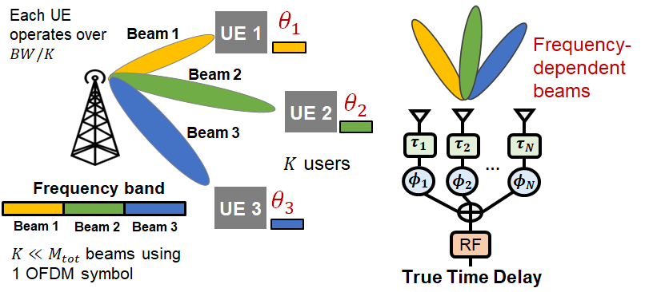
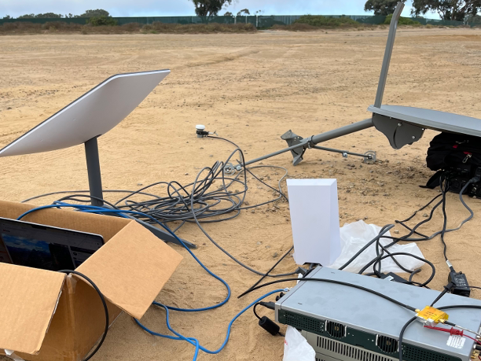
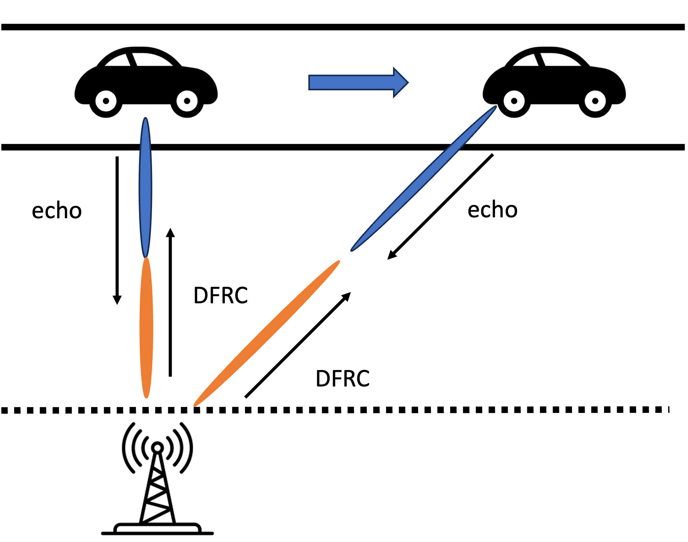
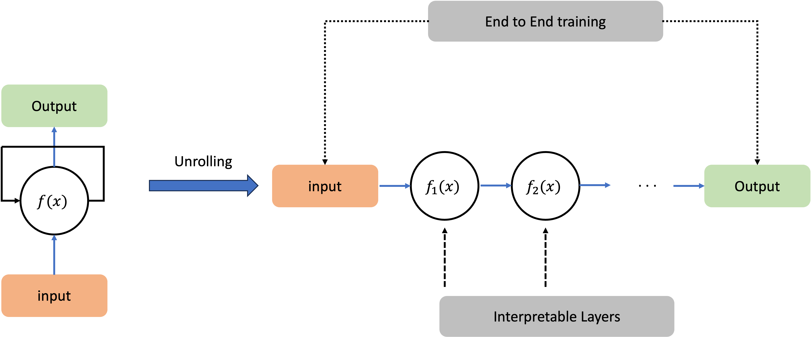

|
I am a second-year master student advised by professor Danijela Čabrić (CORES Lab) at University of California, Los Angeles. My research interests lie at wireless communication, signal processing, optimization and wireless network. Before joining UCLA,I received my Bachelor of Engineering from the College of Information Science and Electronic Engineering at Zhejiang University. |

|
News
| 2023/11 - One paper got accepted by IEEE ICNC 2024. |
| 2023/08 - One paper got accepted by IEEE GLOBECOM 2023. |
| 2023/07 - Working with Prof. Xinyu Zhang as a visiting student at UCSD. |
| 2022/10 - Join CORES lab as a graduate student researcher, working with Prof. Danijela Cabric. |
| 2022/09 - Begin my adventure at University of California, Los Angeles as a MS student. |
| 2022/07 - Outstanding Graduates of Zhejiang University. |
| 2022/02 - One paper got accepted by IEEE WCNC 2022. |
Publications

|
2024 IEEE International Conference on Computing, Networking and Communications (ICNC), 2024 |
|  |
2023 IEEE Global Communications Conference (GLOBECOM), 2023 [paper] |
|
2022 IEEE Wireless Communications and Networking Conference (WCNC), 2022 [paper] |
Projects
|  |
Advisor: Xinyu Zhang We built a physical-layer starlink signal receiving system to indentify handoff and beamforming behaviors and proposed a system design method to synchronize starlink handoff time fro precise TCP adaptation. We presented a cross-layer solution to enable TCP overly conservative congestion control for throughput improvement. |
|  |
Advisor: Min Li We considered ISAC(Integrated Sensing and Communication) of mmW system in view of the traditional beam tracking methods of training overheads.We developed an efficient data-driven sensing-assisted algorithm based on LSTM with high robustness and precision compared to traditional EKF-model based methods. |
|  |
Advisor: Guanding Yu We proposed a deep-unrolling framework to unfold the iterations into a series of neural network layers in order to accelerate the iterative algorithms, by introducingtraining parameters to approximate matrix inverse using first order Taylor expansion. |
Education
| 2022 - 2024 | University of California, Los Angeles. M.S. Electrical and Computer Engineering |
| 2018 - 2022 | Zhejiang University. B.E. Electronic Science and Technology |